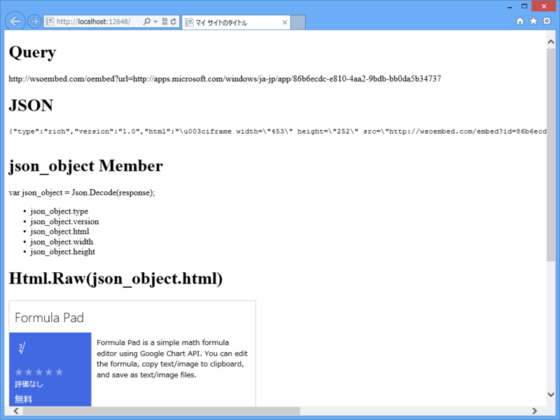
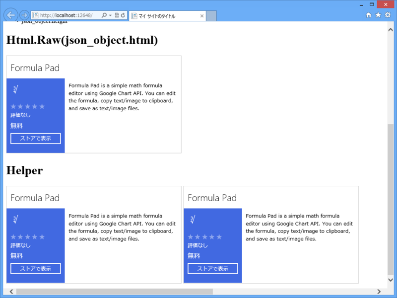

WebMatrix 3: Windows Store oEmbed API を利用する
執筆日時：
Windows Store oEmbed API は、なかなかいいですね。ブログにこんなかんじでストアアプリの情報が貼り付けられます。
使い方などは以下の URL を参照してください。
またストアアプリを作りたくなりました（ぁ
WebMatrix 3 で Windows Store oEmbed API を利用する
Windows Store oEmbed API と jquery-oembed を組み合わせて使う方法 - しばやん雑記 のように JavaScript（クライアントサイド）で利用するのがよいと思いますが、C#（サーバーサイド）で使うこともできます。説明するのは面倒なので、コードだけおいておきます。APS.NET の“空のサイト”を作成し、Default.cshtml を以下のように編集してください。
@{
const string API_ENDPOINT = @"http://wsoembed.com/oembed";
const string APP_URL = @"http://apps.microsoft.com/windows/ja-jp/app/86b6ecdc-e810-4aa2-9bdb-bb0da5b34737";
var url = string.Format("{0}?url={1}", API_ENDPOINT, APP_URL);
var response = string.Empty;
using (var downloader = new WebClient(){ Encoding = System.Text.Encoding.UTF8 })
{
response = downloader.DownloadString(url);
}
var json_object = Json.Decode(response);
}
<!DOCTYPE html>
<html lang="ja">
<head>
<meta http-equiv="Content-Type" content="text/html; charset=utf-8"/>
<meta charset="utf-8" />
<title>マイ サイトのタイトル</title>
<link href="~/favicon.ico" rel="shortcut icon" type="image/x-icon" />
</head>
<body>
<h1>Query</h1>
<p>@url</p>
<h1>JSON</h1>
<pre>
@response
</pre>
<h1>json_object Member</h1>
<p>var json_object = Json.Decode(response);</p>
<ul>
@foreach(var member in json_object.GetDynamicMemberNames())
{
<li>json_object.@member</li>
}
</ul>
<h1>Html.Raw(json_object.html)</h1>
@Html.Raw(json_object.html)
</body>
</html>
結果はこんなかんじです。

API_ENDPOINT を叩けば JSON が返ってくるので、JSON ヘルパーを利用してオブジェクトにしてやりましょう。このオブジェクトは dynamic なので、json_object.html などとしてやれば値がとれます。大文字小文字に注意してね ☆（ゝω・）vｷｬﾋﾟ
Windows Store oEmbed API ヘルパー
こんなコード、毎回書くのは面倒なので、ヘルパーにしてしまいましょう。ルートフォルダーに App_Code フォルダーを作成し、WindowsStore.cshtml を作成します。中身はこんな感じ。
@helper GetHtml(string app_id) { // app_id が url で渡されても許容する app_id = app_id.Split('/').Last();const string API_ENDPOINT = @"http://wsoembed.com/oembed"; const string APP_BASEURL = @"http://apps.microsoft.com/windows/ja-jp/app/";
var url = string.Format("{0}?url={1}", API_ENDPOINT, APP_BASEURL + app_id);
using (var downloader = new WebClient(){ Encoding = System.Text.Encoding.UTF8 }) { var response = downloader.DownloadString(url); var json_object = Json.Decode(response);
@Html.Raw(json_object.html) } }
使い方はこんな感じ。Default.cshtml の最後の方にでも書き足してみてください。
: : <h1>Helper</h1> @WindowsStore.GetHtml(APP_URL) @WindowsStore.GetHtml("86b6ecdc-e810-4aa2-9bdb-bb0da5b34737") </body> </html>
結果はこんなかんじです。

ja-jp で決め打ちになっているのはアレなので、
@helper GetHtml(string app_id, string locale = "en-us") { ： ：
みたいなシグネチャの方がいいのかもしれませんね。